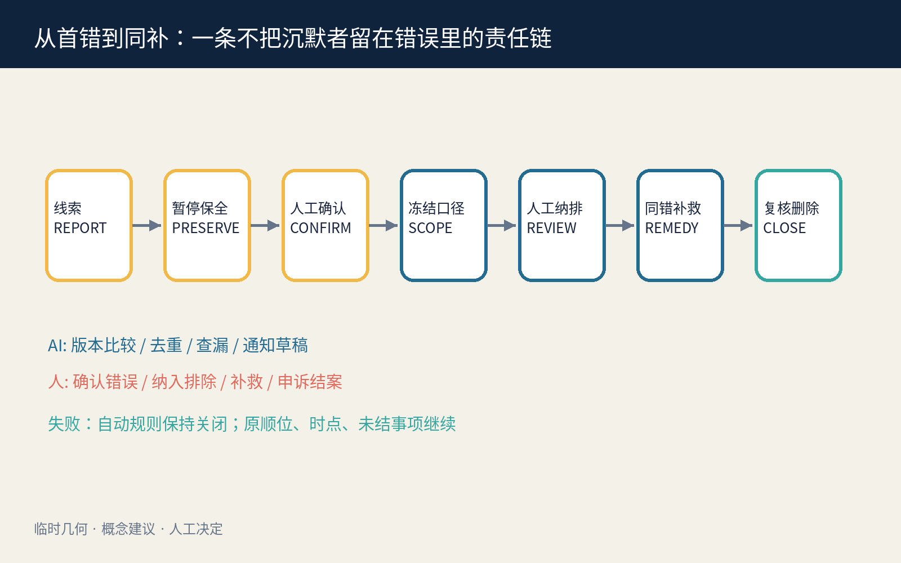
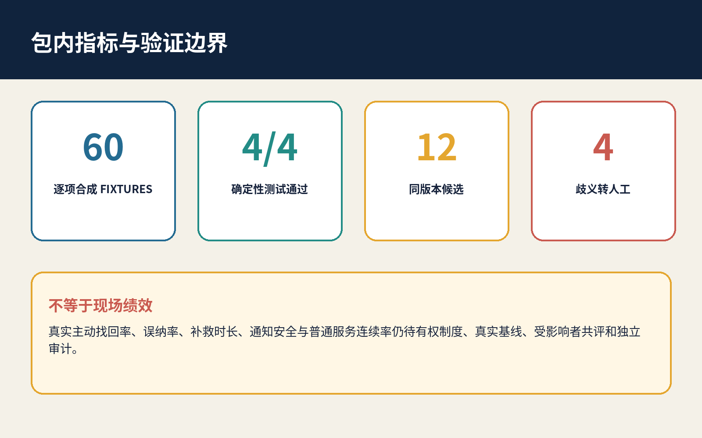
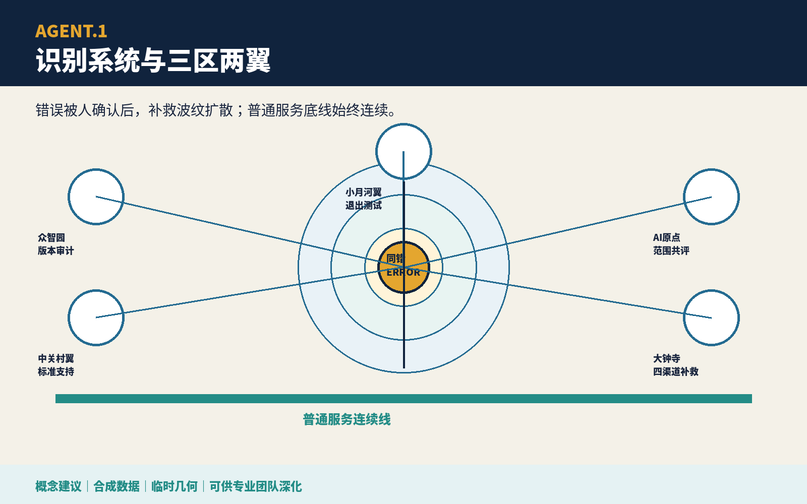
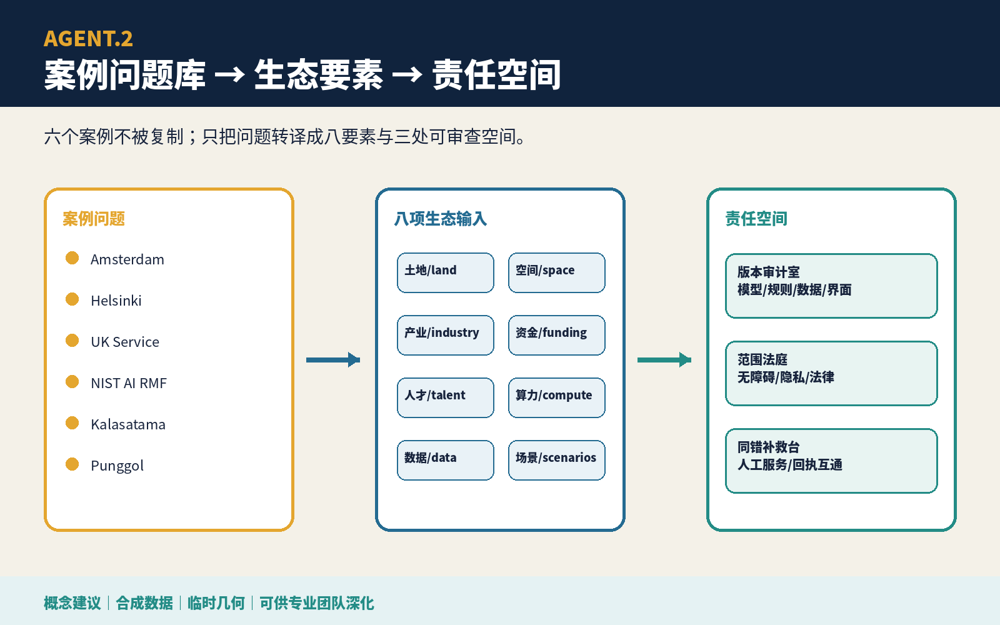
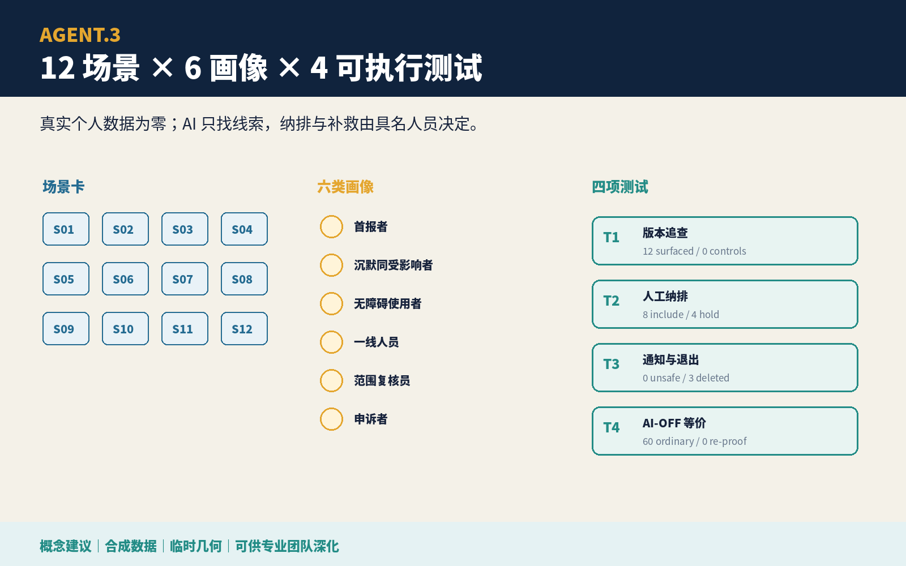
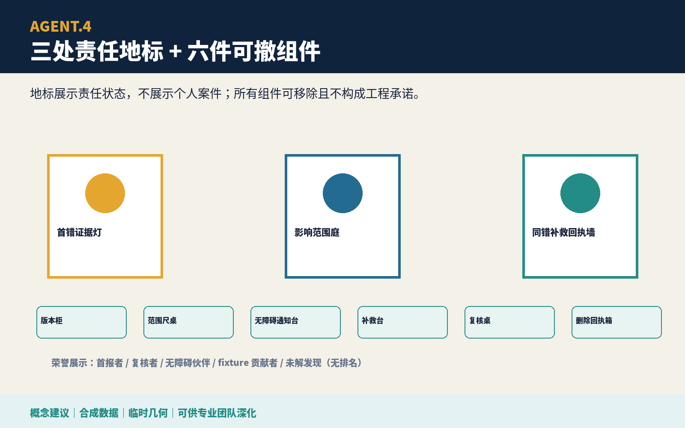
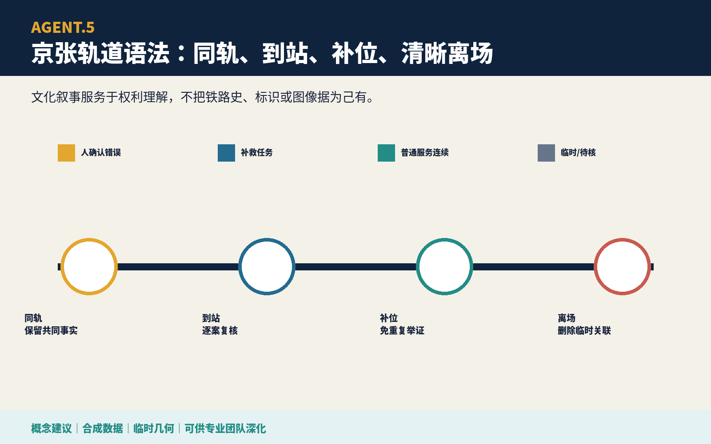
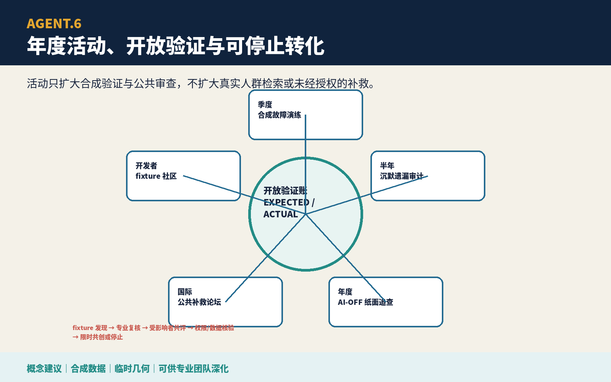

Privacy
No personal data or durable group label.
一人证明系统出错，不让每个人重新投诉。
总览地图｜三层范围｜重点区域｜用地分区｜交通慢行｜蓝绿公共空间｜建筑｜更新项目｜AI 场景｜核心指标｜任务覆盖｜自检状态｜来源｜假设

AI: compare frozen versions, deduplicate candidates, find omissions, draft editable notices. Human: confirm error, set scope, include/exclude, authorize remedy, close or keep open.
60 条逐项 fixture；验证器从每条输入执行候选规则，再聚合四项测试；篡改示例必须非零退出。12 条同版本均被提示，8 条纳入、4 条因歧义转人工，48 条对照均排除。

node visual/assets/verify-fixtures.js · tamper: node visual/assets/verify-fixtures.js --tamper-example
错误节点、补救波纹、普通服务底线；三区两翼各有责任。

Structured evidence: visual/assets/taskbook-deliverables.json
六案例只作问题库；八要素连接版本、空间与公共责任。

Structured evidence: visual/assets/taskbook-deliverables.json
12 场景、6 画像、4 测试、60 条逐项 fixture；AI 不作最终决定。

Structured evidence: visual/assets/taskbook-deliverables.json
三处可读责任地标、六件可撤组件和不排名的荣誉展示。

Structured evidence: visual/assets/taskbook-deliverables.json
同轨保存共同事实、到站逐案复核、补位后可清晰退出。

Structured evidence: visual/assets/taskbook-deliverables.json
季度桌演、半年遗漏审查、年度 AI-off、国际论坛形成可停止闭环。

Structured evidence: visual/assets/taskbook-deliverables.json
任何测试失败都停止自动推进；真实权限、数据字段、通知安全、现场容量、绩效与专业结论仍待核。
No personal data or durable group label.
Refuse notice, leave link, see reason, appeal, receive deletion receipt.
Rough geometry never becomes an official redline, parcel, capacity, or area claim.
All embedded boards are deterministic original work; no third-party image or remote asset.